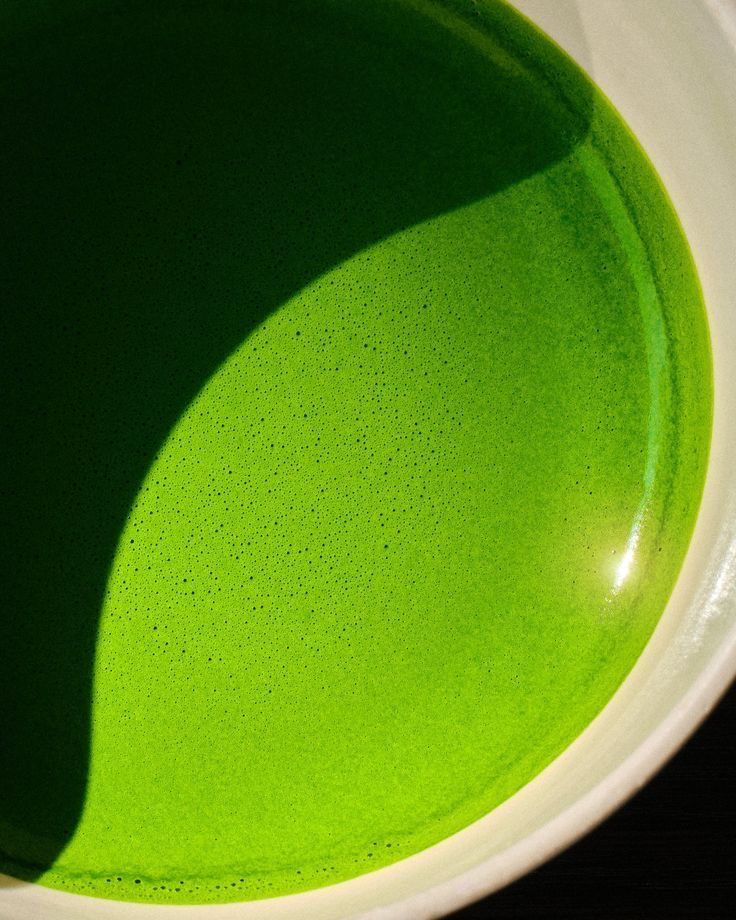
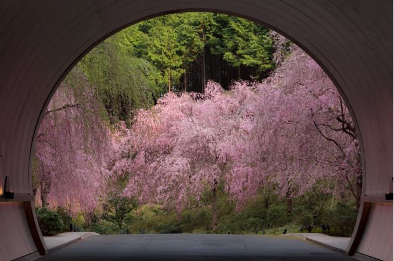

What is matcha?
Matcha is a finely ground powder made from carefully and specially grown green tea leaves. Unlike traditional green tea, the entire leaf is consumed, making matcha both flavorful (umami) and nutrient-rich.

Matcha is a finely ground powder made from carefully and specially grown green tea leaves. Unlike traditional green tea, the entire leaf is consumed, making matcha both flavorful (umami) and nutrient-rich.

Although matcha is mainly associated with Japan today, its origin story begins in China during the Tang Dynasty era, where the tea leaves were steamed, ground into a powder, and used by Buddhist monks to support their meditation practice. In the 12th century, the Buddhist monk Eisai brought powdered tea from China to Japan, where it evolved into a spiritual and cultural practice. This practice became central to the Japanese tea ceremony, known as “sado” or “chanoyu”, which translates to “the way of tea” and emphasizes mindfulness, harmony, respect, and tranquility.
Matcha is known for its high antioxidant content, calm energy, and focus-enhancing properties. Many people enjoy it as a gentle alternative to coffee.